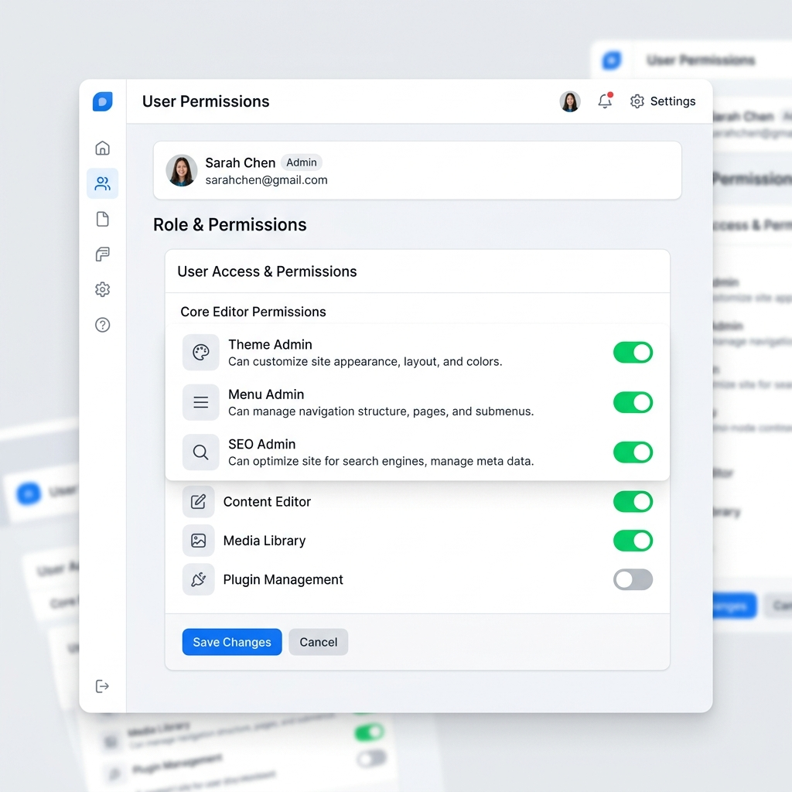

Take full control over what your team can edit on your Odoo website.
Odoo’s default "Website Editor" role is often too broad, granting access to modify pages, blogs, themes, and SEO settings. Website Access Control Pro introduces dedicated sub-roles, allowing you to restrict editing capabilities to exactly what your users need.

Hide complex snippets like Custom HTML, Embedded Scripts, and Forms from standard editors while keeping basic text and image blocks available.
Separate permissions for writing, publishing, and deleting blog posts. Let writers write, while administrators manage publication.
Allow users to upload images to the media library while preventing them from deleting existing media assets.
Developed by Odoocrafts Innovations.